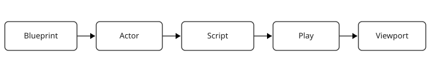
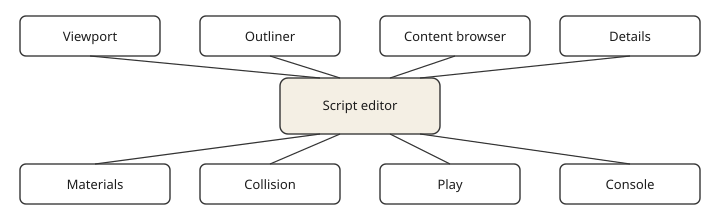

MeshForge script editor
This guide is for someone making a level. It explains the script window, how actors and blueprints work, how a script shows up in the viewport, and how an AI can help. It does not assume you write code for a living.

1. What the script editor is
The script editor is a window for the small programs that make a level do something when you press Play. A door can open. A pickup can vanish. A companion can walk toward the player and answer a line of speech.
Open it in any of these ways:
- Click the Script tab.
- Double-click an actor in the view or in the outliner.
- In the Details panel, under Actor, click Edit Script.
- Right-click an actor or a blueprint and choose Edit Script.
The window can float. Drag the title bar to move it, and drag the corner to resize it. Dock pins it along the bottom. Float puts it back. Each open script is a tab.
The code area highlights keywords, strings, numbers, and comments. Validate checks the script and prints errors with line numbers in the console under the code. Save writes it into the project. MeshForge also writes the project on a short timer after you edit, using the same autosave as the rest of the level.
Ctrl+Z inside the code box undoes typing. Saving a script, or accepting an AI edit, is also one step on the level undo stack.
2. What can have a script
Five kinds of thing can carry a script.
| Kind | What it is | What the script usually does |
|---|---|---|
| Programmable material | A material with a GLSL snippet and named parameters | Changes colour, glow, and the states on that material. This tab is the shader, not gameplay code. |
| Static mesh / Static actor | A prop, a wall, a door, a pickup | Reacts when something touches it or when an event arrives |
| Character blueprint, and a placed Character | The body the player drives in Play | Reads input, or leaves walking to the built-in Character movement |
| NPC/AI blueprint, and a placed NPC | A character that is not the player | Patrols, follows, listens, and talks |
| Level | The scene itself | Hears events from the whole level |
A blueprint is an asset in the content browser, under Blueprints. It remembers an actor type, a shape, a collision setup, and a script. Drag it into the view, or ask an agent to spawn it. That makes an actor: one placed copy. The copy starts with the blueprint's script. If you edit the copy's script, that copy keeps its own version. The blueprint's other copies stay as they were. The Details panel shows the blueprint name and whether this actor has its own script.
Every object in the scene is an actor. The type is Static, Character, NPC/AI, or Level. Change it from the Type menu in Details. The scene root is the Level actor. Its script is the level script.
Collision comes with the actor. Presets are BlockAll, OverlapAll, NoCollision, Pawn, and Water. Shapes are box, sphere, capsule, convex, and complex. Double-click a mesh in the content browser to open the collision editor. Right-click an actor and choose Edit Collision, or use the button in Details. Turn on Collision in the view header to see the shapes. A Character or NPC defaults to a Pawn capsule. A spawn point defaults to no collision.
Play runs the open scene. Stop puts transforms back and deletes anything a script spawned during Play. Escape also stops. Only a Character actor walks with the keys. WASD or the arrow keys move it. Space jumps. E calls onInteract on actors it is touching.
3. How a script meets the rest of the editor

- Viewport. Play shows the result. A script moves an actor by asking for a new position or rotation. The view draws that. It does not run the script itself.
- Outliner. Every row is an actor. Double-click it to edit the script. The eye still hides the object. H and Shift+H still work when you are not playing.
- Content browser. Drag a mesh onto the view or onto a landscape slot. Drag a blueprint to place an actor. Double-click a mesh for collision. Double-click a blueprint or a programmable material to edit its script or shader.
- Details. Actor type, spawn checkbox, collision summary, and Edit Script. If the actor uses a programmable material, the material section is still there for live parameters.
- Materials. A gameplay script can set a parameter or a named state. The shader tab in this same window edits the GLSL and the parameter list. Build with AI on the material window is unchanged.
- Collision. Overlap and hit hooks fire from these shapes during Play. BlockAll pushes a Character. OverlapAll only notifies the script. NoCollision does neither.
- Play. Scripts start when you press Play and stop cleanly when you press Stop. They do not run while you are editing.
- Console. The strip under the code shows Validate errors and
api.loglines. The status bar at the bottom of MeshForge still shows editor messages.
A script is a set of functions. You only write the ones you need.
| Function | When it runs |
|---|---|
onStart() | Once, when Play begins |
onUpdate(dt) | Every frame. dt is seconds |
onOverlap(other) | When another actor starts touching this one |
onHit(other) | When two BlockAll shapes hit |
onInteract(by) | When the player presses E while touching this actor |
onEvent(name, data) | When any script emits that name |
onSpeak / onHear(who, text) | When something is said. The agent panel also sends what it speaks |
api.after(seconds, fn) | A timer |
other has id, name, type, position, and hasTag.
The whitelist on api is the only way out of the script:
transform,setPosition,setRotation,setScale,rotate,move,moveTowardcomponents,materialParams,setMaterialParam,setMaterialStatespawn,destroy,findActorsemit,input,say,log,after
findActors can filter by type, name, tag, or spawn. input returns axes, jump, and interact while a Character is being driven.
Templates in the editor menu: Rotate, Patrol NPC, Door trigger, Pickup, Companion idle and emotions, Level script. Pick one, then change the numbers.
4. Make a small game
This is a yard with a hut, a cover wall, a door, a pickup, a player, and a companion. You can click it together, or run the script in the next section and then change it.
1. Start MeshForge. Press Play on an empty scene once so you know Stop brings you back. Press Stop.
2. Open the Landscape tab. Set the map size from an agent, or leave the default, and send the landscape into the scene. The ground is one group: terrain, water, buildings, trees.
3. Add a cube. In Details, leave the type as Static. Edit Collision and choose BlockAll, box. Scale it into a low wall. This is cover.
4. Add a building the same way, or use Place with kind building. Give it BlockAll too.
5. Add a thin cube in the doorway. Set collision to OverlapAll. Edit Script, choose the Door trigger template, and Save. When the Character overlaps it, the door moves up and emits door.
6. Add a sphere. OverlapAll. Use the Pickup template. Touching it emits pickup and removes the sphere until Stop.
7. Add a capsule. Set the type to Character. Collision becomes a Pawn capsule. This is the body you drive. Mark another small object as a spawn point in Details, or add a spawn. On Play, the Character is moved to the spawn.
8. Add another capsule. Set the type to NPC/AI. Use the Companion template. It walks toward the Character. If the agent says "hello" or "sad", the companion answers and asks its material for the happy or sad state. That state only changes the look if the mesh uses a programmable material that has those states. The Screen Face preset does.
9. Press Play. Walk into the pickup and the door. Press E beside the companion. Press Stop and check that the pickup is back.
To give the companion a face, assign the Screen Face programmable material, then open that material from the content browser. The script editor shows the GLSL and the parameter JSON. You can leave the shader alone and still call api.setMaterialState('happy') from the companion script.
The level script is the scene root. Select nothing, or select the scene, and click Edit Script. The level template logs every event, so the door and the pickup show up in the console.
5. How an AI helps
There are four doors an AI can use. None of them stores an API key in the project. Keys stay in the Agent session.
Agent panel. Connect a provider, then talk. The model can only call the fixed tool list. New tools cover scripts and level building: list and read scripts, set and validate a script, attach or detach one, create a blueprint, spawn an actor, set an actor type, list actors, start and stop Play, start a new project, set the landscape size, place a primitive, set collision, add a spawn, and save the project. Older tools still move objects, edit materials, and send the landscape into the scene. Delete and New project ask you first. Each edit is one undo step. Live material changes are not undo steps, same as before.
Voice. If the browser has the speech API (Chrome or Edge), the Agent panel can listen and can speak replies. Spoken replies are also delivered to scripts as onHear while Play is running. A companion can react without you writing a chat window.
Ask AI in the script editor. Type a short brief under the code and press Ask AI. MeshForge sends the current script and the brief to the connected provider. You get a line diff. Accept writes it into the tab. Reject throws it away. If the reply is not a legal script, it is refused and the tab stays as it was. With no provider connected, the box says so and you edit by hand.
The agent API for an outside program. The same actions are on window.MeshForge, so a script or another program can build a level without clicking:
newProject, setLandscapeSize, generateLandscape, sendLandscapeToScene, placePrimitive, setActorType, setCollision, setScript, addSpawn, createBlueprint, spawnActor, listActors, runPlay, stopPlay, saveProject.
scripts/build_level.mjs does a whole yard this way and only calls those methods. Run it against a live MeshForge:
node scripts/build_level.mjs http://127.0.0.1:8000/?noautosave=1 C:\MeshForge\demo-yard.mfproj
On Windows, start run_windows.bat first so that address is open. Copy the file and add more BlockAll cubes where you want cover. That is the shape of a shooter level: a landscape, walls, spawn points, a Character, and NPC actors with scripts. MeshForge does not yet contain a gun, a health number, or a finished AI body. The Character actor is the body Play already moves. An outside AI drives the editor through this API. It does not walk around inside the level as its own puppet yet.
setLandscapeSize takes width, depth, and height in metres. The map is square, so depth uses the same edge as width. The call says so in its note. Height scales the hills.
saveProject needs a path ending in .mfproj and the MeshForge server, because the file is written on that computer. The zip holds scene.json, scene.glb, materials.json, and scripts.json.
6. Safety and limits
A script is gameplay code, not a plugin. Plugins are trusted and are not sandboxed. Scripts are.
- In the browser, Play runs each script in a Worker. The Worker is not given the page, the editor objects, or a way to reach the network. Before the script is compiled,
fetch,XMLHttpRequest,WebSocket, andimportScriptson that Worker are replaced with functions that throw. - The script is wrapped so names such as
window,document,fetch,Function,globalThis,process, and the storage APIs are local undefined values.apiis the only object passed in. - A check runs first. It rejects
eval,Function,constructor,import,fetch,document,window, and the other names above. The wordevalcannot be turned off by a local variable, because strict mode forbids that binding, so the checker refuses the script instead. - If the Worker cannot start, MeshForge uses the same wrapper on the page thread and says so in the script console. A script that never returns can freeze the tab in that fallback. The page is still not passed in.
- This is not a security product. The checker and the Worker block the obvious paths. A script written to escape a Worker might still find a new one. Do not run hostile scripts from the internet.
- Scripts cannot read API keys, files, or another site. Logs stay in the console.
- Ask AI and the agent tools never write the key into the asset or the project.
7. What is untested
- Not tried on Windows, on a real GPU, or with a real mouse. The logic tests and a headless Chrome smoke test were run on Linux.
scripts/build_level.mjswas run against an in-memory editor that implements the same method names, and the live page was checked for place, type, script, Play (Worker), Stop, and landscape size. A full.mfprojwas not written throughrun_windows.bat.- Ask AI was checked with a refused network script and a diff. It was not sent to a live provider.
- The Worker was probed in a Node worker and by pressing Play in headless Chrome. Nobody tried to break out of it on purpose beyond the blocked names.
- Walking a Character across the landscape, the collision preview, and spoken
onHearwere not sat through by a person. - A programmable material state on a companion was not watched in the view during Play.